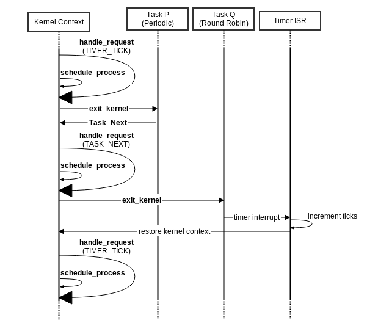
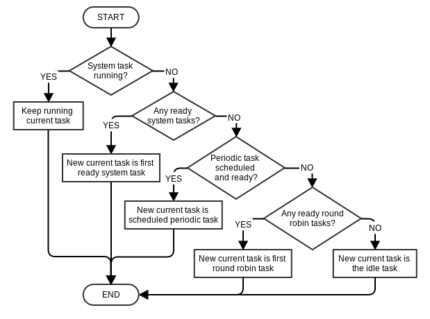
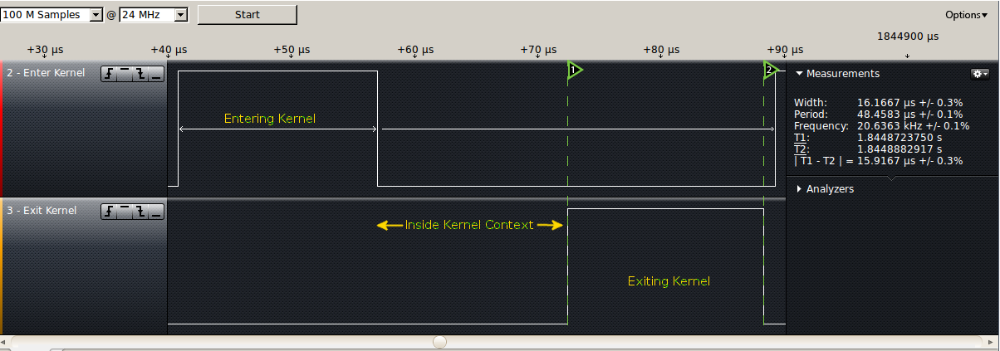
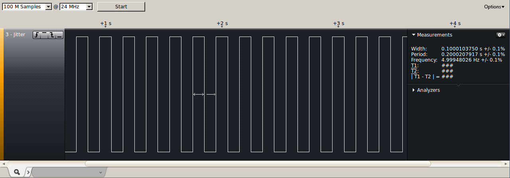

1.0 Objective
The goal of project 3 is to implement a real-time operating system (RTOS) according to a provided API. The RTOS will be able to run tasks at three scheduling levels: periodic, round robin, and system. Test cases will also be created to ensure the correct operation of the RTOS.
2.0 Hardware
The RTOS was written for the MEGA-1284P Xplained board. Information on this board is available from the project 2 report.
3.0 Kernel
3.1 Initialization
The first function that must run is OS_Init(), which initializes the RTOS. The user application running on top of the RTOS implements main(), which creates required tasks. To make OS_Init() run first instead of main(), the crt0.S file is provided. This file is adapted from gcrt1.S, provided by avr-gcc. The modified section of crt0.S (lines 288-295) is shown below.
.section .init9,"ax",@progbits
#ifdef __AVR_ASM_ONLY__
XJMP OS_Init
#else /* !__AVR_ASM_ONLY__ */
XCALL OS_Init
XJMP exit
#endif /* __AVR_ASM_ONLY__ */
The changed instructions above make the compiled application jump to OS_Init() instead of main() on startup. To use avr-gcc to compile the application using crt0.S, the -nostartfiles option is required when linking, as shown below.
avr-gcc -nostartfiles -mmcu=atmega1284p -o project3_RTOS.elf crt0.o main.o os.o
gcrt1.s also requires macros.inc, also available from avr-gcc, which is included in project 3 unmodified.
The actual OS_Init() function is responsible for setting up the RTOS. As part of initialization, it completes the following tasks:
- Initialize task descriptors and queues
- Create the idle task
- Call the application's
main() function
- Configure and start the system timer
- Enter the main kernel loop
main() is not created as a system task like in other RTOS implementations so that absolute periodic scheduling can be used. If a periodic task is created with offset 0, and main() is a system task, main() will always execute first, and the periodic task will never be able to start at tick 0. The timer is initialized after main() has been called so that the created tasks start executing at tick 0. The RTOS can also support an extra task because main() is not taking up a task descriptor as a system task. See section 4 for more information on tasks.
Once the RTOS has been initialized, it enters the main kernel loop, shown below. The main loop continually handles requests, then switches into the context of the current task.
static void kernel_main_loop() {
for (;;) {
// Handles any requests made by the process (if any)
kernel_handle_request();
// Exits the kernel, switching contexts to the next process
exit_kernel();
// Process returns to here.
}
}
3.2 Context Switching
Context switching is handled by two functions, listed below: exit_kernel() and enter_kernel(). The first is called by the kernel to switch context back into the currently running task. The second is called to invoke the kernel to resolve a kernel request, such as scheduling.
The exit_kernel() function is the first of the two to be called, since the RTOS begins in kernel context. This function switches into the context of the task that is currently scheduled by saving the kernel context, including general purpose registers as well as the status register (SREG) and the stack pointer (SP), then restoring the task's context. It then manually uses the ret instruction to pop off the next two bytes on the stack, which form the address the task function should resume execution at. The macros used to restore context are explained in the following section.
static void exit_kernel(void) {
// The PC was pushed on the stack with the call to this function.
// Now push on the I/O registers and the SREG as well.
SAVE_CTX();
//The last piece of the context is the SP. Save it to a variable.
kernel_sp = ((uint16_t) *(&SP + 1) << 8) | ((uint16_t) SP );
// Set the SP bytes manually, since setting the SP directly doesn't work
SP = (uint8_t) cur_process->sp;
*(&SP + 1) = (uint8_t) ((volatile uint16_t) cur_process->sp >> 8);
// Restore I/O and SREG registers.
RESTORE_CTX();
/*
* Assembly return instruction required since the C-level return expands to assembly
* code that restores context, but we do that manually.
*/
asm volatile ("ret\n"::);
}
Tasks that have run before simply have their existing context restored, but new tasks do not have any context. When a new task is created, its stack is initialized so that a valid context can be restored, even though the task has never run. This new stack consists largely of zero values for the general purpose registers, followed by the address of the beginning of the task function. Immediately after this address is the address of the Task_Terminate() method, so that if the task ever returns, it will jump into the termination method. See section 4 for more information on tasks.
The enter_kernel() function is largely exit_kernel() in reverse, switching from task context to kernel context.
static void enter_kernel(void) {
// The PC was pushed on the stack with the call to this function.
// Now push on the I/O registers and the SREG as well.
SAVE_CTX_TOP();
STACK_SREG_SET_I_BIT();
SAVE_CTX_BOTTOM();
cur_process->sp = (uint8_t *) ((((uint16_t) *(&SP + 1) << 8) | (uint16_t) SP ));
// Restore the kernel's context, SP first.
SP = (uint8_t) (kernel_sp);
*(&SP + 1) = (uint8_t) ((volatile uint16_t) kernel_sp >> 8);
// Now restore I/O and SREG registers.
RESTORE_CTX();
/*
* Assembly return instruction required since the C-level return expands to assembly
* code that restores context, but we do that manually.
*/
asm volatile ("ret\n"::);
}
3.3 Saving and Restoring Context
Saving context for a task consists of pushing all general purpose registers, as well as the status register SREG, onto the stack of the given task. The code below is taken from the XplainedRTOS implementation by Scott Craig, Justin Tanner, and Matt Campbell.
For the most part, saving context is done by pushing all registers in order. Some special handling is required to store the SREG as well, though. Since the push instruction requires a register argument, SREG cannot be pushed directly. Instead, R31 is pushed first, then SREG is loaded into R31.
push r31 ; save r31 first so we can use r31 to save SREG
in r31,__SREG__ ; load SREG into r31
cli ; disable interrupts
push r31 ; push r31 (now containing SREG)
push r30 ; push the remaining registers
push r29
push r28
...
push r3
push r2
push r1
push r0
Saving context
If context is saved in a timer interrupt, which means that SREG has its interrupt enable bit set to 0, then this bit is set to 1 in the R31 copy of SREG because interrupts should be enabled when context is restored. To do this, the following instruction is put right before R31 (containing the SREG copy) is pushed onto the stack.
ori r31, 0x80 ; set the interrupt enable bit (7) in the copy of SREG
Restoring context is simply saving context in the reverse order. Recall that SREG will be popped off the stack before R31 though, so we pop into R31 once to retrieve SREG and again to get the actual R31.
pop r0
pop r1
pop r2
pop r3
...
pop r28
pop r29
pop r30
pop r31 ; pop the saved SREG into r31
out __SREG__, r31 ; restore the saved SREG
pop r31 ; restore the actual r31
Restoring context
3.4 Kernel Requests
When tasks need the kernel to perform an operation on their behalf, they set the kernel request code and enter the kernel using enter_kernel(). Valid kernel request codes are listed below.
| Request Code |
Description |
| K_REQ_NONE |
The default case; no request |
| K_REQ_TIMER_TICK |
Used when the kernel is entered from the timer interrupt, on a tick (5ms) |
| K_REQ_TASK_TERMINATE |
Used by Task_Terminate() (see section 4) |
| K_REQ_TASK_NEXT |
Used by Task_Next() (see section 4) |
| K_REQ_TASK_WAIT |
Used when a task waits on an event (see section 6) |
| K_REQ_TASK_SIGNAL |
Used when a task signals an event (see section 6) |
4.0 Tasks
The RTOS supports three different task priorities: system, periodic, and round robin, but much of the implementation is level-independent. Task information is stored in task descriptor structs. The RTOS keeps a static pool of these, sized according to the maximum number of tasks.
typedef struct {
// Process ID
uint8_t pid;
// The stack for the process
uint8_t stack[MAXSTACK];
// Pointer to the HW stack pointer
volatile uint8_t *sp;
// Type (IDLE, SYSTEM, PERIODIC, or RR)
uint8_t type;
// Argument passed by the init function
int arg;
// The current state of the process
process_state_t state;
// The remaining number of ticks for the process
uint8_t ticks_remaining;
} process_descriptor_t;
The task descriptor struct
Tasks can be in one of four states, described below. The task state is considered in scheduling decisions, and also when creating or destroying tasks. Descriptors are borrowed from a pool of pre-allocated task descriptors; when a task terminates, its state is set to DEAD, and its descriptor can be reused for a new task.
typedef enum {
RUNNING, // Process is currently running
BLOCKED, // Process is blocked by an event
READY, // Process is ready to run
DEAD, // Process has not yet been allocated and does not have a SP
} process_state_t;
Task states
Task descriptors are kept in a static pool of all task descriptors, but specific descriptors are linked together to form queues. Descriptors are wrapped in linked list nodes and strung together.
4.1 System Tasks
System level tasks are reserved for critical functions. They are scheduled by the RTOS in a first-come-first-served manner, and run until finished, or until the task is blocked or yields. A system task cannot be preempted by any other task. System tasks are kept in the system-level task queue that maintains the order for first-come-first-served scheduling.
System tasks are created with Task_Create_System, shown below. The first argument is the task function, and the second is the initial argument to the function. Task_Create_System returns 0 on failure and non-zero on success.
int Task_Create_System(void (*f)(void), int arg);
4.2 Periodic Tasks
Periodic tasks are defined by a period, a worst-case execution time, and an offset, all measured in ticks. The period is how often the task should run, the worst-case execution time is how much time to allocate for the task to run, and the offset is how long after boot the task will start its first period. For example, a task with period 10, worst-case execution time 2, and offset 4 will start executing at 4 ticks after boot, and run for (up to) 2 ticks, once every 10 ticks. In ticks, the start times for this task will be 4, 14, 24, 34, etc.
Periodic tasks must stick to their assigned schedules. It is an error if a periodic task exceeds its provided worst-case execution time. Periodic tasks are also unable to wait on events.
Periodic tasks are created with Task_Create_Period, shown below. The first argument is the task function, and the second is the initial argument to the function, and the remaining three are the period, worst-case execution time, and offset. Task_Create_Period returns 0 on failure and non-zero on success.
int Task_Create_Period(void (*f)(void), int arg, unsigned int period,
unsigned int wcet, unsigned int start);
Periodic tasks are more difficult to schedule than other types of tasks because they follow a rigid schedule. To deal with this, all periodic tasks make use of the next_tick field in the task descriptor, which contains the number of the next tick when the task will be ready to execute. Initially, next_tick is set to the task's offset; every time the task executes, the value of next_tick is incremented by the task's period. Periodic tasks are stored in a queue like system tasks, but they are inserted into the queue based on next_tick, with tasks closer to executing at the front. Errors with the periodic task schedule (eg. overlap) are not checked at creation, but at runtime instead.
Periodic tasks make use of the ticks_remaining field in the task descriptor to track how far they are into their wcet. If a periodic task is still executing when its ticks_remaining hits 0, it has gone over its wcet, and the RTOS triggers an error.
4.3 Round Robin Tasks
Round robin tasks only run when no system or periodic tasks are running. A round robin task gets one quantum, equal to two ticks or 10ms, then the processor is given to the next round robin task and the current task goes on the back of the round robin task queue. If the task is preempted before its time expires, however, it is placed at the front of the queue instead.
Round robin tasks are created with Task_Create_RR, shown below. The first argument is the task function, and the second is the initial argument to the function. Task_Create_RR returns 0 on failure and non-zero on success.
int Task_Create_RR(void (*f)(void), int arg);
Round robin tasks are kept on a queue and scheduled as first-come-first-served like system tasks, but only when no other tasks are running, as round robin tasks have the lowest priority. Round robin tasks keep track of how long they have executed using the ticks_remaining field in the task descriptor. When ticks_remaining drops to zero, the task is moved to the back of the queue. Tasks can be preempted before their quantum is up, so it is important that if a task is preempted after half its quantum, it only gets to execute for the remaining half before going to the back of the queue.
4.4 In-Task Kernel Requests
There are a number of methods the RTOS provides that tasks can call while running.
4.4.1 Task_Terminate
Calling Task_Terminate() disposes of the calling process, freeing up any resources it was using. This method sets the kernel request code to K_REQ_TASK_TERMINATE and enters the kernel, which takes care of the cleanup.
void Task_Terminate(void);
4.4.2 Task_Next
When a process calls Tast_Next(), it yields the processor to the next process to be scheduled. This function sets the kernel request to K_REQ_TASK_NEXT and enters the kernel, triggering a scheduling decision. See the next section for information on scheduling.
void Task_Next(void);
4.4.3 Task_GetArg
A process can call Task_GetArg() to retrieve the integer argument that it was created with. This function simply looks up the argument, which is stored inside the task descriptor on creation.
int Task_GetArg(void);
4.5 Task Control Flow
The following diagram shows an example of how context switches occur during normal operation of the RTOS. This example includes two tasks: P, a periodic task, and Q, a round robin task. Task P gives up the processor using Task_Next(). Task Q gets scheduled, and later gets interrupted by a timer tick. See section 5 for more information about scheduling.

Control Flow Example
5.0 Scheduling
5.1 Timer
A critical piece of the RTOS is the system timer, which is required for almost all scheduling decisions. TCNT0 was chosen for use as the system timer as 8-bit resolution is sufficient for the RTOS requirements.
The smallest useful time period for the RTOS is 5ms, designated as one tick. The timer must generate interrupts every tick to allow scheduling decisions to be made. TCNT0 is an 8-bit timer, so a prescaler of 1024 was used, resulting in exactly 54 timer steps for every 5ms tick.
Though the RTOS operates on the level of ticks, the system timer actually needs millisecond-resolution to implement the required Now() function. This function returns the number of milliseconds passed since OS_Init() was called by taking into account the number of ticks accumulated as well as the current timer value. Since integers on the Xplained board are only 16 bits, the millisecond count wraps around every 65536 milliseconds.
unsigned int Now();
5.2 Scheduling Decisions
Every tick (5ms), when the system timer generates an interrupt, the kernel is entered to make a scheduling decision. Informally, the scheduling process followed by the kernel is as follows. Note that preemption rules and error checks were omitted for brevity.

Flow Chart for Scheduling Decisions
The scheduler works at tick-resolution, but some cases require dealing with fractions of ticks. When a task calls Task_Next(), for example, it yields the remainder of its current tick to another process. This fractional tick does not count as a full tick, though, because tasks are guaranteed a minimum number of full ticks (wcet for periodic and 2 for round robin). The next task therefore ends up getting a bit of extra time. This is better than cutting the task short (1.5 ticks instead of 2, for example), and it is the only other reasonable option because of the tick resolution used.
The scheduler code also recognizes possible errors. If the periodic task at the front of the periodic queue (recall that tasks are sorted by next running time) is ready, and there are more than one periodic tasks in the queue, the scheduler checks if the second periodic task in the queue is ready. If both tasks are ready, this is an error, and the scheduler calls OS_Abort(). Another error the scheduler recognizes is when a periodic task has been pushed over into its next period. If a periodic task is pushed later by a system task and is still executing in its next period, even if it has not violated its worst-case execution time yet, the scheduler triggers an error.
6.0 Events
System and round robin tasks can wait on events, which are asynchronous signals that can be used for interprocess communication. Tasks that wait on events become blocked. When an event is triggered, all tasks waiting on it will be resumed. If there are no tasks waiting, the event will be marked with an outstanding occurrence. A task that tries to wait on an event with an outstanding occurrence will not actually wait, but see the stored occurrence and continue. Events can only remember whether they have an outstanding event or not, and cannot remember the number of outstanding occurrences. Also, only one task can wait on a given event at a time.
Events are created with Event_Init(), shown below.
EVENT * Event_Init(void);
Each event is tracked using a simple struct. These structs are pre-allocated like task descriptors. There are only a limited number of events allocated by the RTOS, so it is an error to create more than MAXEVENT events.
typedef struct event {
// The process ID of the waiting process, '-1' if none.
int8_t waiting_pid;
// True if this event has an outstanding occurrence
bool signalled;
} EVENT;
The event struct
Tasks (except periodic tasks) can wait on an event using Event_Wait. If the event has an outstanding ocurrence, it continues immediately; otherwise, the task becomes blocked, and is not considered for scheduling until woken up by another task signalling the event. Tasks can also use Event_Wait_Next to disregard any outstanding occurrences of the event and wait for the next signal. Both methods use the K_REQ_TASK_WAIT kernel request code and rely on the kernel for the actual work.
void Event_Wait(EVENT *e);
void Event_Wait_Next(EVENT *e);
When a task waits on an event (without an outstanding occurrence), its status is changed to BLOCKED and its PID is saved inside the event struct. The task is also removed from its current task queue and put on a waiting queue, where it is kept until woken up.
To signal an event, tasks use Event_Signal. This either unblocks the task waiting on the event if any, or marks the event with an outstanding occurrence. If a task is to be woken up, the blocked task is looked up using the PID stored in the event struct, and its status is set to READY. The task is moved back to the appropriate ready queue. Event_Signal then enters the kernel with request code K_REQ_TASK_SIGNAL
void Event_Signal(EVENT *e);
Finally, outstanding event occurences can be cleared using Event_Clear. This function simply sets the signalled field in the event struct to false.
void Event_Clear(EVENT *e);
7.0 Errors
When the RTOS encounters an unrecoverable error, it sets a global error number and calls OS_Abort(). This method stops the normal operation of the RTOS and enters an infinite loop that blinks LED1 a number of times corresponding to the error number. LED3 is flashed for one second every cycle to denote that the error code is done. For example, for error number 3, LED1 would blink 3 times, followed by LED3 for one second, repeated forever. Error codes are listed below with explanations.
| Error Number |
Error Code |
Description |
| 0 |
ERRNO_NO_ERROR |
No error; the default value |
| 1 |
ERRNO_EXCEEDS_MAX_EVENT |
More than MAXEVENT events were created |
| 2 |
ERRNO_PERIODIC_CALLED_WAIT |
A periodic task attempted to wait on an event |
| 3 |
ERRNO_EXCEEDS_MAX_PROCS |
More than MAXPROCESS tasks were created |
| 4 |
ERRNO_INVALID_PROC_TYPE |
A task was created with an unrecognized type argument |
| 5 |
ERRNO_INVALID_KERNEL_REQ |
The kernel was invoked to deal with an unrecognized request type |
| 6 |
ERRNO_PERIODIC_TASK_OVERLAP |
Two periodic tasks had their schedules overlap; or, one periodic task was pushed back so far that it ran over into its next period |
| 7 |
ERRNO_PERIODIC_TASK_EXCEEDS_WCET |
A periodic task was still executing at the end of its worst-case execution time |
| 8 |
ERRNO_MULTIPLE_TASKS_CALLED_WAIT |
More than one task attempted to wait on the same event |
| 9 |
ERRNO_UNKNOWN_ERR |
An unknown error has occurred, possibly an implementation error |
8.0 Testing
8.1 Test Cases
Testing of the RTOS was conducted by creating tailored test cases and retrieving a trace of task activity from running the tests. Test cases are listed below, with descriptions.
| Test Case File |
Description |
| test_system.c |
Tests that the RTOS correctly schedules system tasks |
| test_periodic_task_period.c |
Tests that the wcet of a periodic task is stretched accordingly when preempted by a system task |
| test_periodic_offsets.c |
Tests that the RTOS correctly schedules periodic tasks based on offsets |
| test_rr.c |
Tests that the RTOS correctly schedules RR tasks |
| test_rr_1tick.c |
Tests that round robin tasks execute for 2 ticks (one quantum), even when the longest they can run consecutively is 1 tick. |
| test_event_sys_periodic.c |
Tests that a system task waiting on an event preempts a periodic task when the event is signalled |
| test_event_periodic_rr.c |
Tests that a round robin task waiting on an event does not preempt a periodic task when the event is signalled |
| test_event_wait_next.c |
Tests that the Event_Wait_Next method works |
Some test cases were also created to ensure that error conditions trigger correctly. These cases are listed below.
| Test Case File |
Description |
| test_error_too_many_events.c |
Tests that the RTOS generates an error when too many events are created |
| test_error_too_many_tasks.c |
Tests that the RTOS generates an error when too many tasks are created |
| test_error_periodic_overlap.c |
Tests that overlapping periodic tasks cause an error |
| test_error_periodic_wait.c |
Tests that a periodic task waiting on an event causes an error |
| test_error_periodic_task_period_overlap.c |
Tests that the RTOS generates an error when a system task stops a periodic task from executing in its current period |
8.2 Tracing
A trace library was written expressly for testing and debugging. The trace API consists of three functions; one to add a trace entry, one to get the trace as a string, and one to set an error handler. Adding a trace entry requires specifying a number to identify the calling task and an event, for example whether the task is being entered or exited. The error handler is called whenever the RTOS enters OS_Abort(); this is especially useful when trying to force error cases.
// Add a new trace entry
void add_trace(uint16_t process_number, trace_event event);
// Get the trace formatted as a string
char * get_trace();
// Set a callback that the RTOS will invoke if OS_Abort is called
void set_error_handler(void (*funct)(void));
A sample test case is shown below which simply tests that system tasks are run in the order they are created. The main() function creates the tasks and prints a debug message indicating the start of the test. It also sets the error handler. In this test cases, there should be no errors, so the error handler just prints "fail" to signal that the test was not successful.
The task function adds entries to the trace. It retrieves the task's argument, and writes an ENTER event followed by an EXIT event. Once the first four system tasks are complete, the last task executes. This is a special task that retrieves the trace data and compares it to the expected trace. ENTER events are marked by an opening bracket, then the task ID. EXIT events are marked by the task ID followed by a closing bracket. The correct trace in the sample test case therefore means that task 0 started and completed, then task 1 started and completed, etc. If task 0 were to be preempted by task 1 before completing, the trace might look like (0,(1,1),0).
int count = 0;
void task(void) {
int arg = 0;
arg = Task_GetArg();
add_trace(arg, ENTER);
add_trace(arg, EXIT);
}
void err_handler() {
UART_print("fail");
}
void test_results() {
char * trace = get_trace();
char * correct_trace = "(0,0),(1,1),(2,2),(3,3),";
UART_print("Trace: %s\n", trace);
if (strcmp(correct_trace, trace) == 0) {
UART_print("pass");
} else {
UART_print("fail");
}
}
void main() {
UART_Init0(57600);
set_error_handler(err_handler);
UART_print("\ntest begin\n");
Task_Create_System(task, 0);
Task_Create_System(task, 1);
Task_Create_System(task, 2);
Task_Create_System(task, 3);
Task_Create_System(test_results, 0);
}
Sample test case
8.3 Measurements
The timing of critical operations inside the RTOS was measured using a logic analyzer. First, the time to switch context from kernel to task and vice versa was checked using a single task that repeatedly called Task_Next(). When switching to the kernel context, a pin was set high at the beginning of Task_Next() and set low when the kernel main loop was resumed. When switching out of kernel context, a pin was set high immediately before exit_kernel() and set low when the task resumed (after Task_Next()). The time taken for context switching was almost identical in either direction, at about 16µs.

Context switching timing
Second, task creation time for a system task was measured. A pin was set high in main() immediately before calling Task_Create_System and set low immediately after. The total time measured between these events was 17.92µs. It is estimated that the majority of this time is spent creating the task's initial stack.
Third, the event signal-wait cycle time was measured using two system tasks. The first task set a pin high and then waited on an event. The second task signalled the event and called Task_Next(). The first task then set the pin low when it resumed. The total time the first task spent waiting was measured to be 2.96µs.
Fourth, jitter of a periodic task was measured. A single periodic task was created which XORed the value of a pin whenever it ran. Jitter was almost nonexistent; differences in timing were less than 0.1µs in all recorded instances.

Jitter timing
9.0 Obstacles
The most difficult part of implementing the RTOS was the logic to save and restore context. If done incorrectly, it was almost impossible to debug or get feedback as the board would most often restart. Debugging also had to be done carefully to avoid allocating new variables on the stack in critical areas.
Difficulties in manipulating the stack were compounded by an unsolved error encountered when assigning to and reading from the board's stack pointer (SP). For reasons unknown, attempting to write a 16-bit integer to SP resulted in the most significant byte being truncated, causing the RTOS to point into invalid memory. This issue was solved by explicitly writing each byte of the stack pointer, as shown in the code below, which restores the kernel's stack pointer.
SP = (uint8_t) (kernel_sp);
*(&SP + 1) = (uint8_t) ((volatile uint16_t) kernel_sp >> 8);
Likewise for reading, each byte of the stack pointer had to be extracted separately, or the most significant byte would not be included.
kernel_sp = ((uint16_t) *(&SP + 1) << 8) | ((uint16_t) SP );
Unforunately, the SPH macro would not work or did not exist, or the above code could have been much cleaner. The SPL macro was defined, but it pointed to the same address as SP and suffered from the same issue.
10.0 Appendix
Source code (project3.tar.gz)
11.0 References
The XplainedRTOS implementation by Scott Craig, Justin Tanner, and Matt Campbell was used as a significant reference.